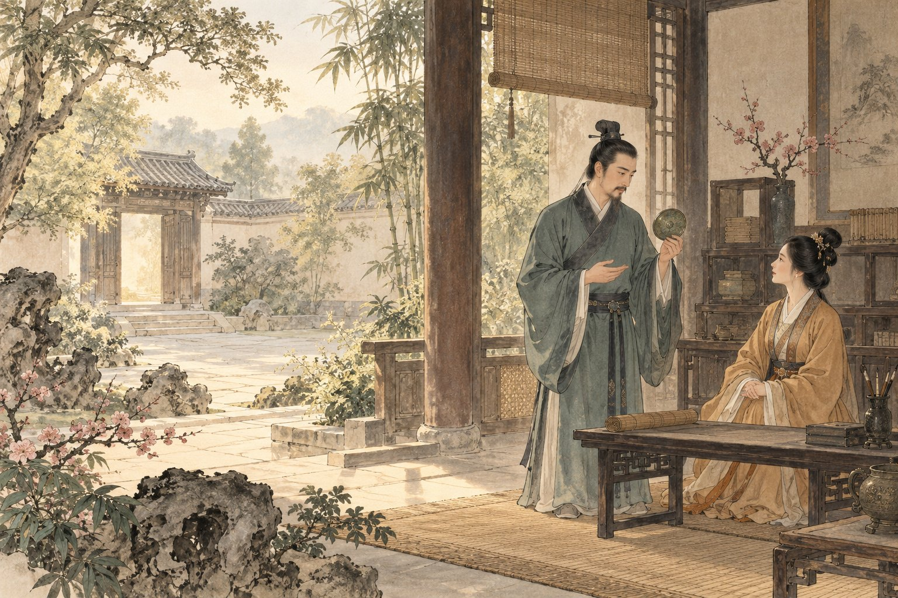
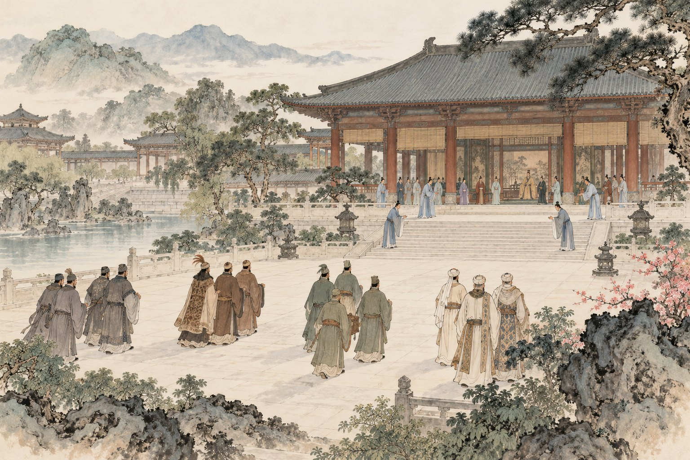

原文点有细线的字词，读音释义即现

慢读先看一幅画，再读一段文。
留意谁在说、为何说，以及听的人怎样回应。
画卷目录从任意一幕，走进故事
给一起读书的大人
篇幅较长，可分两次读：先读三问与反思，再读劝谏与回应。不要求一次背出“三问三答三赏”，先让孩子追踪一条完整的思考线索。
白话、赏读和深入讨论按需展开。留给孩子自己的感受，不预设标准读后感。插画是依据文章展开的艺术想象；人物、衣饰、建筑与细节并非历史实景复原。
查看原文版本与资料说明 →停一停 · 你来发现
水墨插画为艺术想象 · 可用键盘 ← → 翻页
把六幕，连成一篇
邹忌讽齐王纳谏
〔西汉〕刘向编订
文止于此，回味未止。
把字词，放回句子里
字词小笺
认一个字，也看它在这一句里做什么。
把意思，放回这一句话
孰
孰美：谁更美。
孰视之：仔细看他。
朝
朝服：早晨穿戴。
入朝、朝于齐：读 cháo。
闻
闻寡人之耳：使我听到。
四国闻之：听说此事。

合上书，还能带走什么
让真实的意见走进来
肯听一句话，
也要给说话的人留一条路。
留下一句，属于自己的体会。
选一个让你改变看法的动作，或一个仍想追问的地方，写下自己的想法。
只保存在当前浏览器中。
想聊得更深一点：听到相同的答案，就一定可靠吗？
邹忌的三次提问得到了相近的答案。请说明他后来增加了什么证据，再想想：如果大家都受同一个条件影响，人数增加是否就足够让判断更可靠？
聊过之后，再读一种理解
重复听到同一种评价，未必等于得到互相独立的证据。邹忌亲自比较，又检查评价者与自己的关系，才发现可能影响答案的因素。这不意味着所有赞美都不可信，而是提醒我们结合观察、理由和信息来源判断。齐王则进一步让不同意见有机会被听见。
走近写下文字的人：刘向编订
《战国策》汇集战国时期的策士言论和政治故事，由西汉刘向整理编订。本文标题为后人所加，擅长用人物对话、对应反复与生活中的小事说理。书架中“西汉”标示编订者时代，故事人物属于战国。
原文与资料 →纸上
再读第一幕 →画一条“意见怎样到达我”的路。
从一次作品修改、棋局复盘或家庭商量中选真实小事。画出谁提供意见、带来什么依据、你怎样核对；再想一项让对方更容易说出不同意见的做法。不需要写成对自己的表扬。
卷末 · 资料与制作
每一篇，都有文字的来处。
原文与版本
选自《战国策·齐策一》，采用常见课文版本，保留“问之客曰”“谤讥于市朝”等用字。全文分六幕、四个自然段，标点按现代阅读习惯整理。署名“刘向编订”表明文献整理者，故事发生在战国齐国；书架朝代按编订者列为西汉。
校核来源：高校公开古诗文汇编：《邹忌讽齐王纳谏》；古文岛：《邹忌讽齐王纳谏》。查阅日期：2026 年 10 月 29 日。古文为公版作品；白话、释义、赏读与共读提示为本册重新组织。
读音与理解
“朝服衣冠”的朝读 zhāo，入朝、朝廷、朝见读 cháo；“昳”读 yì，“间进”读 jiàn jìn，“期年”读 jī nián。“孰”在问人时是“谁”，在“孰视之”中同“熟”，指仔细。“期年”指满一年，不采用网页个别注释中“明年”的误释。
六幅水墨画
插画使用内置 image_gen 工具生成。原图与完整提示词保存在本册制作文件中。水墨画帮助读者想象文章，人物、场所、器物是艺术表现，不是历史照片、科学图鉴或精确实验记录。
离线与书架
单文件 HTML 内含本册插画、样式和交互，可以单独阅读。保留原目录结构时可返回书架或切换篇目。来源链接需要网络。
孩子主动填写的话按篇尝试保存在当前浏览器。移动文件、更换浏览器、设备或隐私模式可能影响保存，请导出重要记录；记录不上传，也不会被打入阅读压缩包。书架不代表孩子已经学习或掌握。
回到封面 →